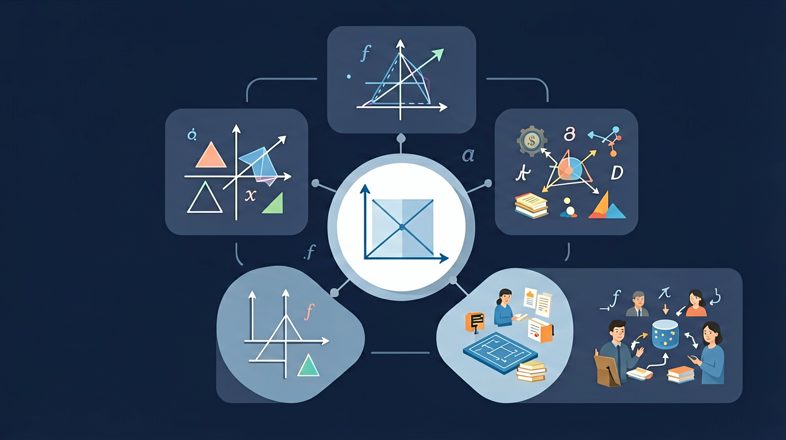

🌍 And（已知）：我们已经有了一定的基础知识
⚡ But（问题）：但还有一个重要概念需要深入理解
💡 Therefore（新知）：因此通过本节课的学习，我们将掌握新知识并能灵活运用
🎯 能说出克与千克的换算关系
🎯 能判断常见物体的合适质量单位
🎯 能计算不同质量单位间的换算
❓ 为什么买水果要用'克'和'千克'，不用'个'数呢？
❓ 1千克的铁和1千克的棉花哪个更重？
❓ 我的体重30千克，换成'克'是多少呢？
学完这一课，这些问题你都能自信地回答。
1 吨等于多少千克？
认识克、千克、吨，学会称量与换算
And：学生知道物体有轻重之分
But：不清楚如何用标准单位描述
Therefore：建立克与千克的概念
质量是物体含有物质的多少，我们用克(g)和千克(kg)来测量。1个鸡蛋约重50克，相当于2枚1元硬币的重量；1千克=1000克，像1大瓶矿泉水就是1千克。记住：轻的东西用克，重的东西用千克。
🌍 买菜时阿姨说'这把青菜300克'，快递叔叔称包裹'2千克'，你的书包大概3-5千克。
一包薯片标着净含量80( )？
🎯 天平两端平衡时，物体的质量 = 砝码的总质量
最小的常用质量单位
1枚1元硬币 ≈ 6g
一张纸 ≈ 5g
1千克 = 1000克
1个西瓜 ≈ 4~6kg
小学生体重 ≈ 30~40kg
1吨 = 1000千克
大象重约 4~6t
小汽车重约 1~2t
记录三种水果的单价（不同单位），统一换算后比价
And：学生已认识克与千克
But：不会灵活转换关系
Therefore：掌握进率换算方法
克和千克就像厘米和米的关系，1000克=1千克。换算口诀：大变小乘1000（3kg=3000g），小变大除1000（5000g=5kg）。比如妈妈买了2500克苹果，可以说成2千克500克，就像2元5角钱一样拆分。
🌍 烘焙时配方写'面粉1.5kg'，但秤只有克刻度，需要换算成1500克。
6千克200克=( )克？
And：会读写质量单位
But：缺乏测量实操经验
Therefore：培养估测与测量能力
称重三步走：1.看秤的单位（指针秤先认刻度）；2.物品放稳归零；3.读数要平视。比如称一本课本：电子秤显示'0.3kg'，表示300克。注意：1袋盐通常500克，可以作为估测参照物。
🌍 超市称水果时，电子屏显示'1.27kg'表示1千克270克，要付钱时按1270克计算。
右图电子秤显示0.85kg，实际是( )克？
1千克=1000克，就像1元=10角=100分
克用于较轻物品（如硬币），千克用于较重物品（如书包）
1个鸡蛋约50克，4瓶矿泉水约1千克
电子秤显示数值时，小数点前是千克，后是克
超市价签上'g'代表克，'kg'代表千克
学习要用心，理解比死记更重要；多问"为什么"，把知识连成网
💡 常见错误往往就在细节中，仔细检查每一步！
回忆：今天学了哪些关键词和规则？试着说出来。
用自己的话解释今天学的核心概念，不看书能说清楚吗？
用今天的知识解决一个实际问题，或写一个新例子。
把今天的知识与已有知识联系起来：有什么共同点？有什么区别？能不能自己创造一道新题？
先独立作答，再点选项查看对错与错因。
下列哪个物品的质量最接近1千克？
妈妈买了2000克大米，相当于多少千克？
一箱橙子净重3kg500g，用克表示是多少？
5千克=____克
答案：5000
1千克=1000克
2400克=____千克____克
答案：2 400
2000克=2千克，余400克
✅ 比较质量要看单位是否相同
💡 混淆质量与体积概念
✅ 换算后要对比位数
💡 单位换算粗心
口诀：千克克，要分清，一千克等于一千克
类比：就像积木搭高楼，小积木是克，大高楼是千克